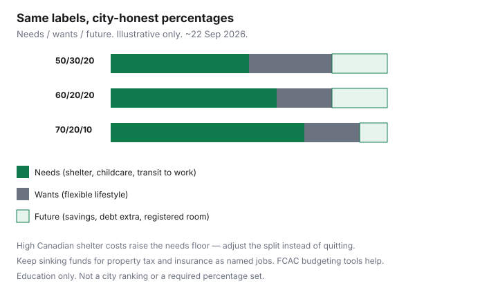

Personal Finance · Canada
Is the 50/30/20 Budget Realistic in Canada? A City Cost Adjustment Method

Is 50/30/20 realistic in Canada? Often not in high-rent cities: CMHC estimates the average earner in the Greater Toronto Area would need 42% of after-tax income just to rent a vacant one-bedroom, so “needs” rarely fit in 50%. Keep the needs / wants / future labels and rebuild the percentages from your real bills.
The 50/30/20 poster assumes needs fit in half of take-home pay. In many Canadian cities, rent or a mortgage payment alone blows past that line before transit, childcare, or groceries speak. Households then decide they are “bad at money” and quit. The fix is not more shame. It is a city-cost adjustment that keeps the useful labels — needs, wants, future — and rebuilds the percentages.
Education only. Rent figures are CMHC averages from its 2025 Rental Market Report (October 2025 survey, published 11 Dec 2025). Split percentages are planning sketches, not a prescription for your postal code. As of 5 Oct 2026.
Key takeaways
- US-style 50/30/20 often breaks when Canadian shelter costs are high — adjust the split, do not abandon budgeting.
- CMHC’s October 2025 average two-bedroom rent was $2,034 in Toronto and $2,363 in Vancouver ($1,550 across major centres).
- Rebuild categories with housing, transit, childcare, and taxes visible.
- Use a city-cost method: lock needs from real bills, cap wants, assign the rest to savings and debt.
- 60/20/20 or 70/20/10 can be honest fits; the test is three months of adherence.
- Keep sinking funds outside “whatever is left,” especially property tax and insurance.
Why does US-style 50/30/20 break in high-rent Canadian cities?
50/30/20 (needs / wants / savings) spread through US media with different shelter norms. In Canada’s priciest metros, rent alone can take a third or more of take-home pay before a child is in care: CMHC’s 2025 Rental Market Report says the average Greater Toronto earner would need 42% of after-tax income to rent a vacant one-bedroom unit. Statistics Canada and CMHC call housing affordable when shelter costs are under 30% of before-tax household income, and before-tax income is a bigger number than the take-home pay a 50/30/20 budget splits. Forcing “needs = 50%” turns the budget into fiction. Fiction is how February wins.
The labels still help. Needs are must-pays to keep housing, work, and health. Wants are flexible lifestyle. Future is savings, debt principal beyond minimums, and registered contributions. Only the percentages need a Canadian rebuild.
How much of the budget does rent take in Canadian cities?
A lot, and it varies by city. CMHC’s average two-bedroom rent in purpose-built apartments ran from $1,346 in Montréal to $2,363 in Vancouver in October 2025. Use your own lease, but this is why one national split cannot fit every city.
| Census metropolitan area | Average 2-bedroom rent | Change vs 2024 |
|---|---|---|
| Vancouver | $2,363 | +2.2% |
| Victoria | $2,120 | +5.1% |
| Toronto | $2,034 | +3.5% |
| Ottawa | $1,926 | +3.4% |
| Calgary | $1,914 | no significant change |
| Halifax | $1,826 | +6.7% |
| Edmonton | $1,603 | +3.5% |
| Montréal | $1,346 | +7.2% |
| Major-centre average | $1,550 | +5.1% |
Two cautions. New tenants pay more than these averages: CMHC’s average two-bedroom rent on a newly leased unit was $2,547 in Toronto and $2,696 in Vancouver. And rented condo apartments cost more again, about $2,900 for a two-bedroom in both cities. If you are about to move, budget from the asking rent, not the average.
Rebuild categories: housing, transit, childcare, taxes
Start from last month’s actuals, not a US template:
- Housing: rent or mortgage + condo fees + required tenant/home insurance.
- Utilities: hydro, heat, water, internet needed for work.
- Transit / work commute: pass, essential fuel, or parking required to earn.
- Childcare / support payments: if required to work or by order.
- Debt minimums: cards, lines, student loans — minimums are needs; extra principal is future.
- Groceries at a plain pattern: food is a need; restaurant patterns are wants.
Income tax already came off a pay stub for most employees. Do not “budget” gross. Self-employed households must still skim GST/HST and instalments as needs — that money is not lifestyle.
| Context sketch | Needs | Wants | Future |
|---|---|---|---|
| Lower shelter share / smaller city | 50% | 30% | 20% |
| High rent, no childcare | 60% | 20% | 20% |
| High rent + childcare | 70% | 20% | 10% |
| Temporary rebuild year | 65% | 15% | 20% (debt + buffer) |

How do you adjust 50/30/20 for your city?
Lock needs from real bills, cap wants in dollars, and send everything left to future jobs. Five steps, no shame math:
- List needs from real PADs and receipts for 30 days.
- Sum needs ÷ net pay = your needs floor.
- Set wants as a hard dollar cap you can name (not “whatever”).
- Assign every leftover dollar to future jobs: emergency HISA, debt extra, TFSA/FHSA/RRSP room.
- If future is under 10% and needs are honest, the lever is income, housing, or debt — not a prettier spreadsheet.
Shame math sounds like “other people do 50/30/20 so I should.” City-cost math sounds like “shelter is 42% here; my future skim starts at 12% and rises when childcare ends.”
Example: a Toronto rent inside a 50/30/20 budget
Example with made-up inputs, except the rent, which is CMHC’s October 2025 Toronto average for a two-bedroom. A household takes home $6,000 a month after tax.
| Line | Amount | Share of $6,000 |
|---|---|---|
| Rent | $2,034 | 34% |
| Utilities + internet | $246 | 4% |
| Transit / commute | $300 | 5% |
| Groceries (plain pattern) | $900 | 15% |
| Insurance + debt minimums | $300 | 5% |
| Needs total | $3,780 | 63% |
| Wants cap | $1,200 | 20% |
| Future (HISA, debt extra, TFSA/RRSP) | $1,020 | 17% |
The poster would cap needs at $3,000. Real bills say $3,780, so the household is $780 “over” before it spends a dollar on wants. The honest split is about 63/20/17, close to the 60/20/20 row. The fix is to name it, automate the $1,020, and review in three months, not to call groceries a want.
When does 60/20/20 or 70/20/10 fit better?
Use 60/20/20 when needs land near 55–62% and you can still automate a meaningful skim. Use 70/20/10 when childcare plus rent are dominant and the 10% future line is mostly an emergency fund and employer RRSP match. Revisit when a lease renews, a child enters school, or a commute collapses. Pair with zero-based budgeting if you want every dollar named.
Keep sinking funds outside the percentages war
Annual property tax, auto/home insurance, and holidays are predictable lumps. Put monthly set-asides in the needs or future column on purpose — see Canadian sinking funds. Do not fund them from leftover wants in November.
A one-page Canadian budget split worksheet
- Net pay this month: ______
- Needs total (list): ______ → ______%
- Wants cap: ______ → ______%
- Future skim (HISA / debt extra / registered): ______ → ______%
- Sinking funds included in needs or future? Y/N — names: ______
- Three-month review date: ______
FCAC’s budgeting materials are a solid blank form; your city supplies the percentages.
Sources
- CMHC — 2025 Rental Market Report (October 2025 survey, published 11 Dec 2025): average 2-bedroom rents, turnover rents, condo rents, and the GTA 42% after-tax rent-to-income figure (as of 5 Oct 2026).
- Statistics Canada — Core housing need indicator: affordable housing = shelter costs under 30% of before-tax household income (as of 5 Oct 2026).
- FCAC — Making a budget and Budget Planner; no fixed 50/30/20 split (as of 5 Oct 2026).
- Community pattern: Personal Finance Canada discussions of 50/30/20 vs high rent (pain point only).
- Internal cross-links: zero-based budgeting and sinking-fund guides on Saving Optimizer.
Frequently asked questions
Is 50/30/20 useless in Toronto or Vancouver?
The rigid US split often fails in high-rent cities: CMHC estimates the average Greater Toronto earner would need 42% of after-tax income to rent a vacant one-bedroom. The method still helps as a starting label set — needs, wants, savings — if you rebuild the percentages for your city and taxes.
What does an average two-bedroom rent cost in Canada?
CMHC’s 2025 Rental Market Report put the average purpose-built two-bedroom rent at $1,550 across major centres in October 2025, with $2,034 in Toronto and $2,363 in Vancouver. New leases and rented condos usually cost more.
Should childcare sit in needs or wants?
If you need it to earn the income, treat it as a need. Shame math that calls childcare a ‘want’ is how Canadian budgets get abandoned.
What split should I use instead?
Many high-rent households land nearer 60/20/20 or 70/20/10 (needs / wants / savings+debt) after tax. The right split is the one you can run for three months without lying to the sheet.
Where do sinking funds go in 50/30/20?
Fund them inside needs or as a dedicated savings job — not as leftover wants. Property tax and insurance lumps are needs that happen to be annual.
Does FCAC recommend 50/30/20?
FCAC publishes budgeting tools and guidance; it does not require a 50/30/20 split. Use their worksheet ideas, then adjust for Canadian shelter costs.
Researched and drafted with AI assistance and fact-checked against official Canadian sources. How we create content.
Disclosure: Banking, HISA, and budgeting-app products are offer types. Saving Optimizer may later add partner links. We do not currently claim partnerships. This is education, not financial advice. Prefer a spreadsheet or FCAC-style worksheet over a paid app unless you already like one.